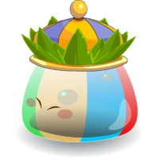

<nav class="navbar navbar-expand-lg navbar-light">
  <button class="btn btn-success " href="/">µBloggos</button>


  <div class="collapse navbar-collapse" id="navbarSupportedContent">
    <ul class="navbar-nav mr-auto">
      
      <!-- Log In -->
      <li class="nav-item active">
        <a class="nav-link" routerLink="/login" *ngIf="user == null">Log In<span class="sr-only">(current)</span></a>
      </li>

      <!-- Register -->
      <li class="nav-item active">
        <a class="nav-link" routerLink="/register" *ngIf="user == null">Register<span class="sr-only">(current)</span></a>
      </li>

      <!-- Log Out -->
      <li class="nav-item active">
        <a class="nav-link" (click)="LogOut()" routerLink="/" *ngIf="user != null" >Log Out<span class="sr-only">(current)</span></a>
      </li>

      <!-- Members -->
      <li class="nav-item active">
        <a class="nav-link" routerLink="/member" *ngIf="user != null">Members<span class="sr-only">(current)</span></a>
      </li>

      <!-- Me -->
      <li class="nav-item active">
        <a class="nav-link" routerLink="/me" *ngIf="user != null">Me<span class="sr-only">(current)</span></a>
      </li>

      <!-- My Messages -->
      <li class="nav-item active">
        <a class="nav-link" routerLink="/message" *ngIf="user != null">My messages<span class="sr-only">(current)</span></a>
      </li>

      <!-- Follow Management -->
      <li class="nav-item active">
        <a class="nav-link" routerLink="/follow" *ngIf="user != null">Followers / Following<span class="sr-only">(current)</span></a>
      </li>

      <!-- Follow Management -->
      <div class="nav-item active my_img">
        
      </div>
  	</ul>
  </div>
</nav>

<div class="my_aligncenter">
  <router-outlet></router-outlet>
</div>